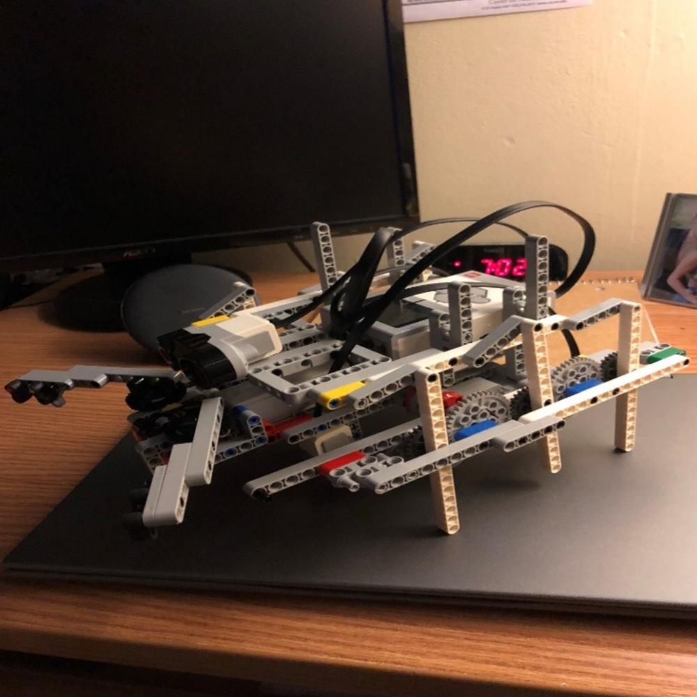

Lego Mindstorms Robot #1 - Fall Semester 2018
The objective of this team project was to build a robot prototype that could follow a black line on the ground, navigate over obstacles, and picking up soda cans and determine where to go set them down based off how much they weighed. All of this had to be done using the given Lego Mindstorms EV3 robot kit. I led the team and also was the main programmer. My main duties included organizing times for the team to meet that worked with everybody's schedules and also using the built in Lego Mindstorms EV3 Software (based on LABVIEW) to create the programs that would give the robot directions.
During the brainstorming phase, I came up with a tyrannosaurus rex prototype for our robot. After weighing out the pros and cons of each of the prototypes our team made, we had decided on an ant-based robot because it was the most stable while walking, had plenty of clearance to add a claw on the front of it, and was able to turn pretty accurately.
While the rest of the team began to fine-tune the ant design, I was responsible for creating the programs for our robot to run during the demonstrations where we were strictly graded. The first program I made just sent power to the two large motors which made the robot walk in a straight line. The next program I made sent power to one motor, which made the robot turn 90° and I mirrored it to turn the other way in the next program. The final program I made was for the claw which was powered by a small motor that would close and then lift the can. Due to time and hardware constraints we were not able to successfully weigh the cans that we picked up.
Despite this constraint we had, our robot still performed well above the class average. The final robot design is pictured above.